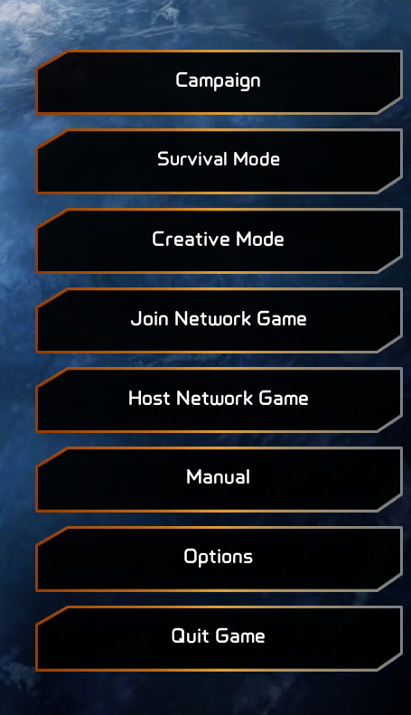
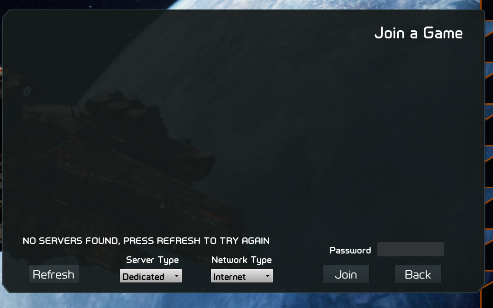
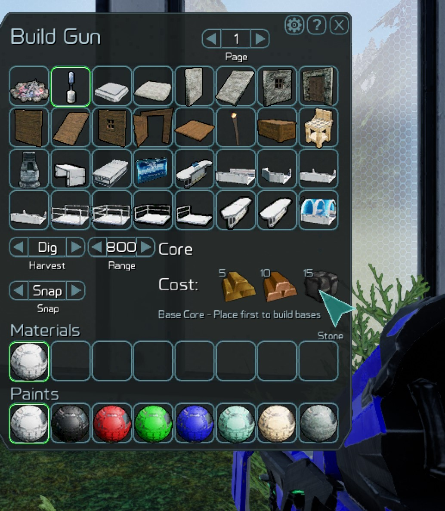
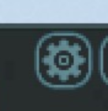
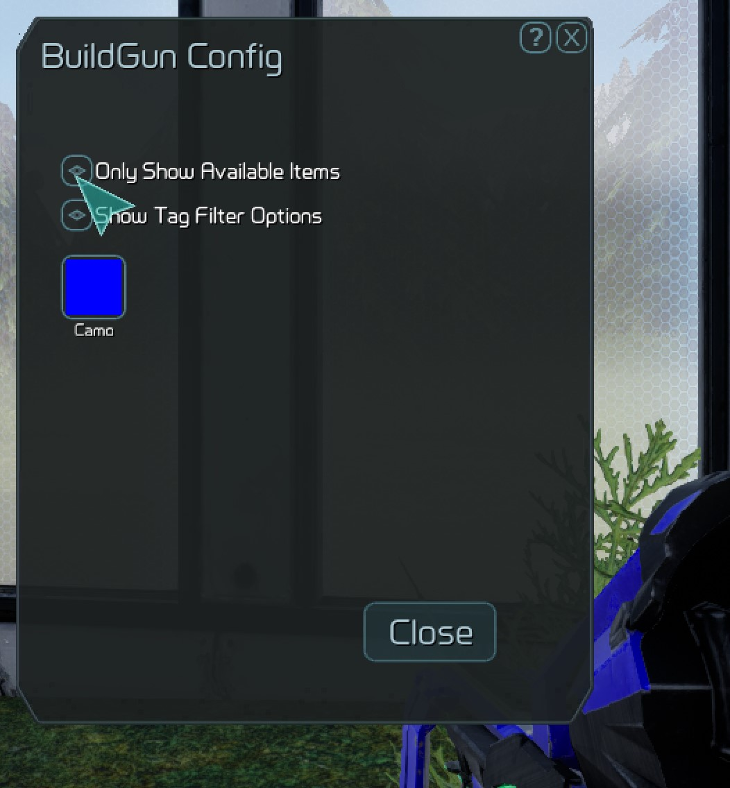
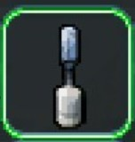

This page will serve as a basic how to play guide for GearStorm..
This manual is a quick-start guide to how to play GearStorm and do certain things in game.
When first running the game, you will see several options on the first screen. If you choose "Host Network Game", "Campaign", or "Survival Mode", you will be playing on your own world on your own PC and you can host other players. If you choose “Join Network Game”, you can play on someone else’s PC that is hosting or a dedicated server.


Now we are on the planet, you might need to defend yourself, change to a weapon by using the mousewheel. You spawn with the standard EM assault rifle for now and your wrist-knives. You will also see a build-gun (the yellow one) that you can mine for resources with, you will need resources to build structures, craft vehicles and weapons and equipment. You can get these by exploring and looking for the outcroppings of different minerals and metals, or by digging in the ground and mining. Once you find the outcropping or just to start digging, equip your build gun (the yellow gun), use your mouse wheel to change weapons, and start digging by hitting the left mouse button. You should see the resources you are collecting start popping up on your message screen.
If you bring up your gun configuration menu while you have the build gun equipped (“Q”) you can see the different items you can build and hover the mouse button over them to see the resource requirements. We recommend you build a walled base first!

By default, the build gun only shows items you can build with the resources you have. In order to show everything the build gun can build (even if you don't have the resources), you need to click the little settings "gear" in the upper right-hand corner of the window.

Then deselect "Only Show Available Items". There are hundreds of items you can build in GearStorm, so this could show a lot of things. You might want to check "Show Tag Filter Options" also so you can filter by type of item:

"Q" brings up gun configuration for other weapons also, not just the buildgun, you can change out your scopes and soon many other options by pressing "Q" with the weapon equipped.
After you build, you can create a vehicle spawn pad to spawn vehicles, other special machines to craft items, turrets and many other fun things!
Building in GearStorm is essential for protection early in the game and hording your stuff and keeping it safe later in the game. To building anything that lasts in GearStorm you will first have to build a Core. The Core is the marker that claims the immediate area around it of the server for you and saves your buildings (and protects them if your server admin has turned on Core protection).

To build a Core you will need 5 Gold, 10 Copper, and 15 Stone.
See the Default Key Mapping here.
Here are some useful tips for admins and artists. Some of these keys are mentioned above but I'll call them out..
"=" Item Cheat Menu - Lets you get any item in the game for free
"Backspace" - Admin- Menu
"V" Toggle HUD
See also
Release Date
System_Requirements